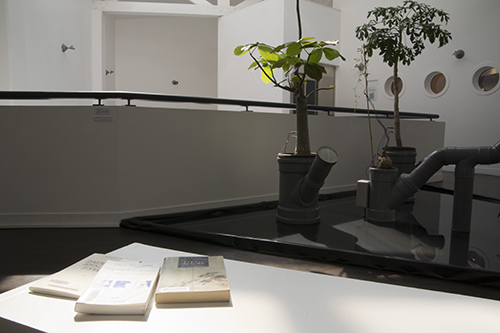
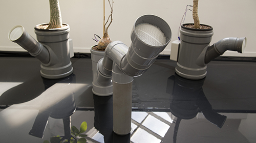

Trio pour montée de sève, avec Nicolas Bralet, François Collin et sabrina Issa, mai 2016,
photo. Delphine Chevrot.

Trio pour montée de sève, avec Nicolas Bralet, François Collin et sabrina Issa, mai 2016,
photo. Delphine Chevrot.
CONTRIBUTION DE FABIANA DE MORAES
Critique d'art et commissaire d'exposition
Le sens et la forme dans la continuité des processus – à propos d’Écritures sonores
Les oeuvres ici présentées sont issues de projets qui associent la création artistique à la recherche scientifique, afin d’ouvrir de nouvelles possibilités visuelles ou sonores à l’expérience sensible. Ces dernières résultent ainsi de “processus qui font oeuvre”-1. Que ce soit dans le travail de Julien Poidevin ou dans les projets développés par le collectif LAAB, nous nous trouvons face à de nouvelles perspectives de représentation des données scientifiques, et cela grâce à des dispositifs qui mettent en relation, dans l’espace d’exposition, des processus naturels et artificiels.
Ces expérimentations hybrides permettent au public d’accéder, par l’expérience esthétique, au fonctionnement interne des végétaux, de visualiser ou d’entendre des effets sonores liés aux variations de facteurs souvent inaperçus de l’environemment, comme la fréquence et l’intensité du vent. Elles dépassent le champ des arts plastiques à proprement parler pour jouer et interagir avec des temporalités et des logiques spécifiques aux champs du savoir scientifique, comme l’ingénierie du son ou la botanique. De ce fait, les artistes doivent tout d’abord s’accorder à de nouveaux langages et protocoles, à des physiologies et métabolismes, à des flux ou des modulations d’énergie, à des variations de température, de pression atmosphérique, de luminosité... bien avant d’obtenir un résultat esthétique/plastique (une forme). Ils se mettent à travailler en collaboration avec d’autres professionnels afin de mettre au point des outils et des dispositifs nécessaires aux projets. Les données scientifiques et leur représentation viennent, dans ce contexte, occuper une place centrale dans les recherches artistiques. La fréquence de la montée de sève d’une plante, la vitesse ou l’intensité du vent, du souffle, par exemple, sont désormais de la “matière” pour les oeuvres.
Les installations qui portent sur le vivant sont davantage déterminées par le “temps réel” des processus, et font face à plusieurs facteurs, dont le hasard, l’imprévisible, l’inattendu. Il s’agit de propositions in progress, qui se déroulent dans la temporalité de la vie, du vivant, et non plus dans la durée d’un temps d’exposition. Et là, nous ne devons pas chercher à reconnaître un début et une fin de l’oeuvre, puisque c’est le processus qui fait oeuvre.
Ces démarches nous placent dans une sorte de transition continue du sens, une situation ouverte et changeante, en permanence. Nous sommes transportés vers une autre approche de l’espace et des temporalités, où les échelles sont interrogées, où se mélangent les notions d’intériorité et d’extériorité, où des êtres apparemment immobiles et silencieux produisent de l’énergie capable d’activer des effets visuels et des variations sonores.
La data visualization, la représentation de l’information résultant des processus scientifiques est désormais accessible, autrement et dirigée vers un public de “non spécialistes”. Nous entrevoyons alors une possibilité et un désir manifeste de “démocratiser” les situations identifiables dans des laboratoires. Ici, une fois de plus, l’art répète le geste de briser des protocoles pour construire (par la poiésis) de nouvelles perspectives pour la médiation du discours scientifique.
Fabiana de Moraes
Critique d’art et commissaire artistique
Trio pour montée de sève, avec Nicolas Bralet, François Collin et sabrina Issa, mai 2016,
photo. Delphine Chevrot.